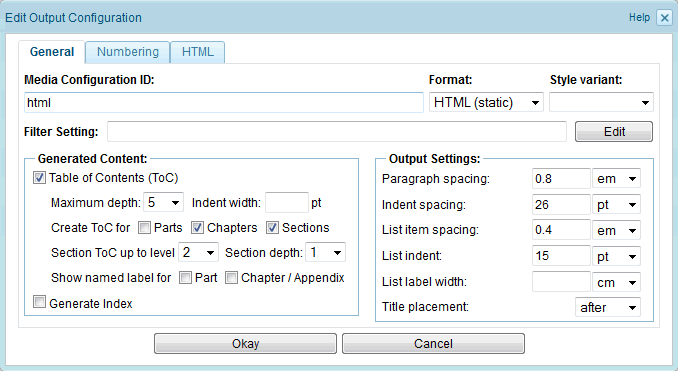

2.6.2.1.1. General output settings
The "General" tab of the output-configuration dialog contains settings that affect all output formats. Each of these settings is described below.

Figure 2.6.6. General output-settings
Media Configuration ID
A unique name identifying the output/media configuration. This field is mandatory.
Filter Setting
By default the filter setting is empty, i.e. the content will not be filtered during publication export. Click the "Edit Filter Setting" button to change the filter setting of this output configuration. This will open a dialog which allows to select one or more applicability flags. See the following screenshot for an example:

Figure 2.6.7. Edit filter setting
Select the desired applicability flags. You can easily select all applicability flags by selecting the checkbox in the header of the list.
The filter configuration of the output configuration can e.g. be used to filter for elements which are applicable only for a certain output media. For example, you could include an animated image in your HTML documentation, but because the animation does not make sense for print output (PDF), you probably want to filter out the animation for PDF output. A solution for this would be to declare an applicability flag "html_only" and assign it to the animated content. Then you create two output configurations, one for web- and one for print-output. In the web-configuration filter setting you select the "html_only" applicability flag, whereas in the print-configuration you don't select this flag.
Note: When a publication is exported (see Section 2.6.3, “Publication export”), the effective filter setting is determined by merging the filter setting of the selected publication configuration and the filter setting of the selected output configuration.
Format
The output format. Currently following formats are supported:
- HTML (static)
- WebHelp v1
- WebHelp v2
- eBook (EPUB)
- DocBook
Depending on which format is selected, additional tabs for format-specific settings may be displayed. The formats WebHelp and EPUB are based on the HTML standard. Therefore, most of the HTML settings are available for EPUB and WebHelp, as well.
The format WebHelp v1 is based on the DocBook stylesheets. For large exports this may lead to slow performance. Furthermore, the WebHelp v1 export applies extensive transformations to the HTML-sources during export (e.g. adding/removing HTML-attributes). Since Docmenta version 1.8, WebHelp v1 is deprecated and is replaced by WebHelp v2. The format WebHelp v2 has better performance and reduces export-transformations to a minimum.
Style Variant
The style variant listbox lists all existing style variants. Select the style variant that shall be used for formatting the content. By default no style variant is selected (i.e. the non-variant styles will be used). See Section 2.4.6, “Using style variants” for more information on style variants.
Table of Contents (ToC)
Check this box, if the exported publication shall include a Table of Contents (ToC). Set the appropriate "Create ToC for" checkboxes, to generate separate Table of Contents for each Part, for each Chapter and/or for sections up to a given level.
The "Maximum depth" field allows to define the maximum depth for each of the generated Table of Contents. Each ToC level is indented by the given "Indent width" value (measured in points). If no "Indent width" is entered, then a default value is used.
If a "Section depth" value is set, then ToCs will only list sections up to the given level (if not restricted by the "Maximum depth"). Section on the 3rd level or deeper are not listed. For example, setting the section depth to 2, allows a maximum of 2 levels below the chapter level.
The "Show named label" checkboxes allow to define whether only a part/chapter/appendix number or a named label is shown for ToC entries. For example, if the first chapter is named "Introduction", then the checkbox controls whether the ToC entry is created as "1. Introduction" or as "Chapter 1. Introduction". Currently named labels are only supported for print-output.
Generate Index
If this box is checked, then a book index is generated, based on the defined index terms (see "Creating index entries" in the tutorial for more information on the creation of index terms).
Paragraph spacing
The space to be inserted between paragraphs.
Indent spacing
The left margin of indented paragraphs. See Section 2.3.8.4, “Indenting paragraphs” for instructions on how to indent a paragraph.
List item spacing
The space to be inserted between list items.
List indent
The left margin of list items.
List label width
Defines the label-width of ordered (numbered) lists. Currently this is only supported for print-output (PDF). Note that the style of ordered list labels can be further customized by creating a block-style with ID "orderedlist_label". See Section 2.4.2, “Pre-defined styles” for details.
Title placement
Select whether generated titles for certain content elements shall be inserted before or after the content element. Examples for such content elements are tables and images which have a non-empty title value.